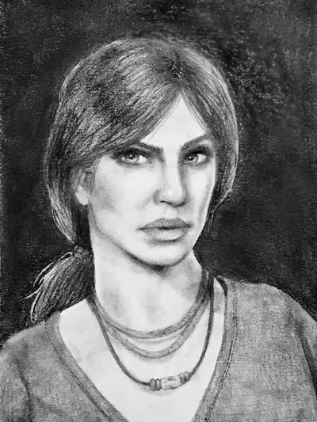
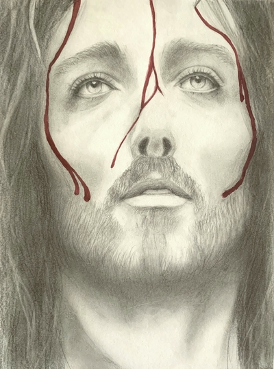
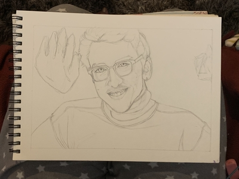
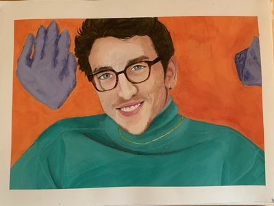
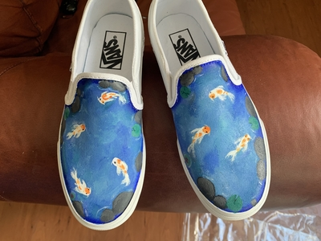

Artwork
This page features many pieces I've done in the past few years. The most recent piece is from 2020. Since starting college, I haven't had much time to create more pieces, but art still has a special place in my heart. All images will list the finished date and a statement about the piece.
Chloe Frazer Realistic Drawing
- March 2018, graphite drawing on paper

ImAllexx Realistic Drawing
- November 2019, graphite drawing on paper

Memeulous Realistic Drawing
- December 2019, graphite drawing on paper
Jesus with Crown of Thorns Realistic Drawing
- April 2020, graphite drawing on paper

Matt Watson Painting
- June 2020, acrylic painting on paper


Koi Fish Canvas Shoe Painting
- July 2020, acrylic painting on canvas
